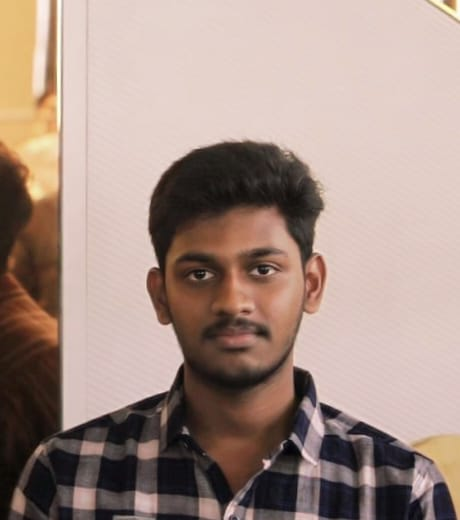

Challa Hima Sai Kiran

Sankalpam
I want to become a AI Engineer and willing to work and achieve it.
Date : 02-06-2026
We started with 7 minutes of meditation.
We solved some statement-related problems in programming on the updation of variables.
Later, for some time played the 2048 tile game and tried to understand the rules and operations for writing code on our own.
Observed some micro animations.
At last, there was a discussion among us about the topics discussed today.
Learnt about the types of the website as static and dynamic websites.
Learnt some basics on HTML and implemented a small static website.
Date : 03-06-2026
After the completion of meditation thought of a problem how to divide a gold plate into 5 parts without using the
protractor.
Next discussed how to write an algorithm and wrote the algorithm of sum of two numbers and identified mistakes
and praticed until we made it right.
Sir explained how the cursor starts and moves while excecuting the program
in the ouput command.
In the afternoon section learnt how to write algorithm for taking input and print the product
of three numbers.
Sir gave a copy to read the qualities of the students trained under Rohini sir.
Finally
closed today's session with updating the html file.
Date : 04-06-2026
Started with a discussion about Whatsapp and Instagram working. Discussed internal features and tried to understand
how frontend, backend and server connects.
Sir taught us control flow statements and how cursor moves across the ouput. Later taught how if and goto works.
Wrote algorithms for printing n natural numbers and printing even numbers to n.
Main principles discussed were End User Experince and Meaning full variables.
Date : 05-06-2026
Wrote algorithms on print even numbers upto n and n even numbers similaraly for odd numbers.
In the afternoon section wrote algorithm for the question which takes user input as sum and product of numbers
and need to print the numbers.
Date : 06-06-2026
Wrote algorithms for printing multiples of a given number, printing multiplication table for a given number and for printing table book
In the afternoon section started with writing algorithm on printing squares upto a number and printing n squares.
We went to Rathan Tata Innovation Hub for a session on AI Bots and production ready AI-agents.
Date : 08-06-2026
After meditation for 10 minutes started writing algorithm on printing the n power n series upto a number and printing
series upto n numbers of n power n.
In the afternoon section listened to a video by Sadhguru on how your goals can trap you. Rather than
setting a goal, devoting on the process is important this is the best insight shared by him.
He also said that the
goal you set was just influenced by environment around you or the data you collected upto that point of time.
If you were not able to reach it you will be dissappointed and stop working on it. If you achieve it you will be
dissatisfied after some time as you were used to it. Just believe in process and try to focus and be discplined.
Date:09-06-2026
Started with writing Fabonacii series algorithm. Learnt a new principle that is no duplucates.
Posted my first post in Linkedin.
Date:10-06-2026
Learned and practiced some git and linux commands.